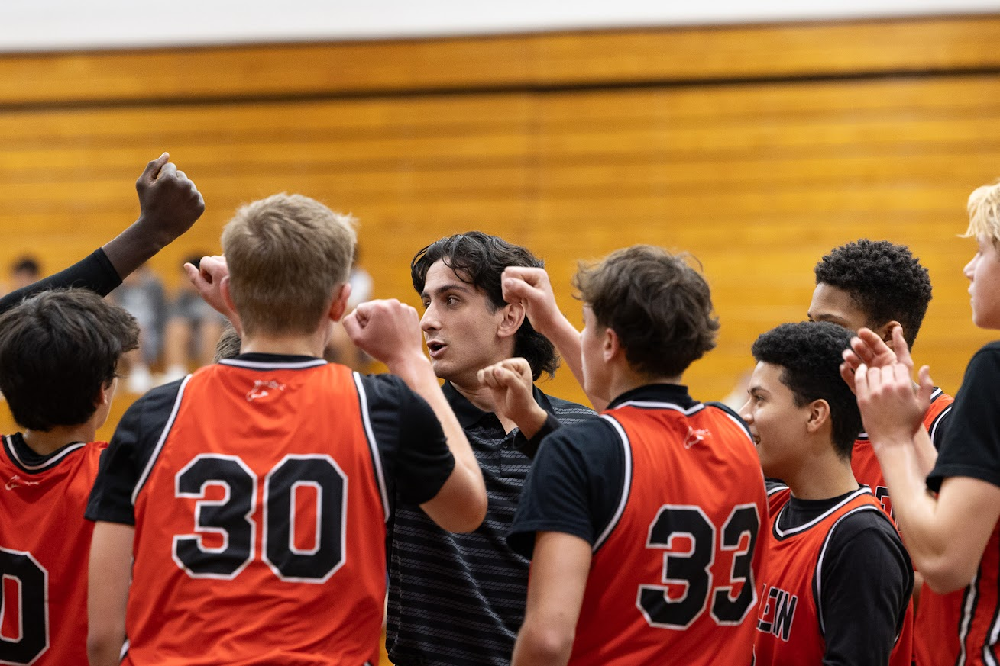
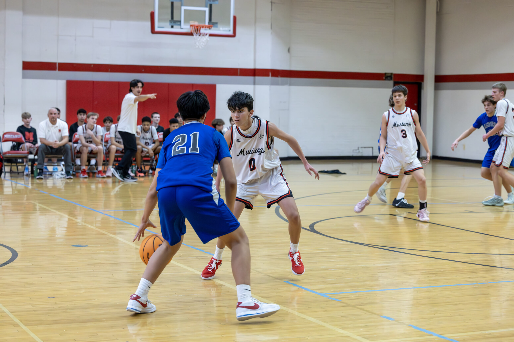
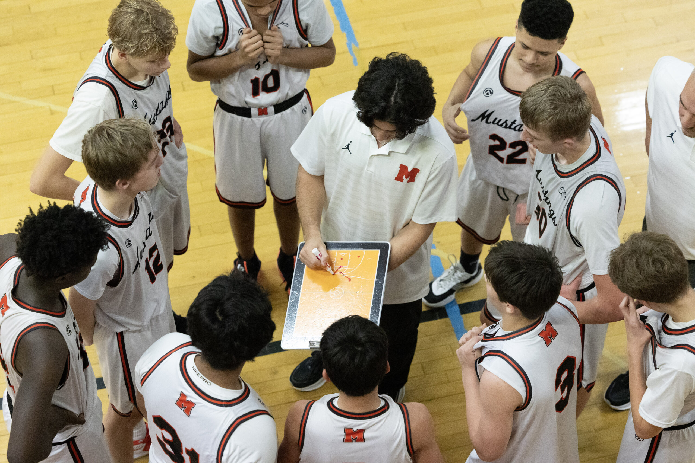
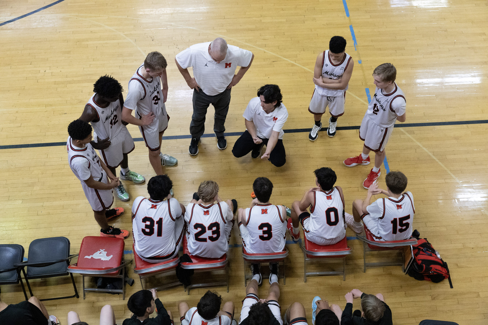
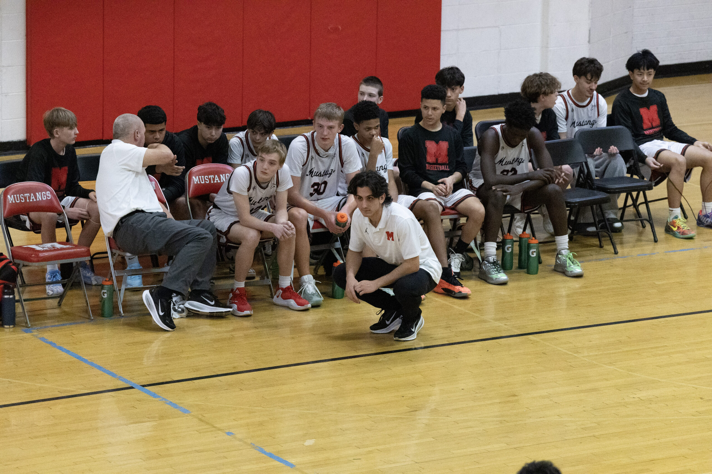

Chicago Roots,
National Reach
LakeShore Legends is a development-driven basketball organization built on elite training standards and long-term athletic growth.

Our Training-First Solution
LakeShore Legends is a development-driven basketball organization built on elite training standards and long-term athletic growth. We exist to build fundamentally sound, intelligent, and competitive basketball players prepared for the next level and beyond.
In today's competitive basketball landscape, many AAU programs focus heavily on playing numerous games, often at the expense of skill development and athlete well-being. This short-term mindset can hinder players' long-term potential and growth.
Lake Shore Legends offers a refreshing alternative. Our training-first philosophy emphasizes skill mastery, strategic thinking, and purposeful competition. By prioritizing practice over excessive gameplay, we prepare our athletes for sustained success, equipping them with the tools needed for high school, college, and beyond.
Training is the foundation of our program. While competition matters, development comes first. Long-term basketball growth requires a strong technical and mental base. Our practices are intentional, structured, and skill-focused, designed to build fundamentals before chasing outcomes. Better training creates better players, and better players naturally elevate teams.

“We don’t just play the game…
We study it.”
Real Development Is Built In The Gym,
Not On The Scoreboard
Our training structure is intentionally different from the typical AAU approach, because our goal is long-term player growth, not short-term program victories.
Most AAU basketball programs only practice once or twice per week, prioritizing weekend tournaments over skill development and basketball IQ.
While we believe competition is important, over-competing without enough structured training often limits true improvement.
We follow a more European-style basketball model that emphasizes repetition, fundamentals, decision-making, and long-term growth.
Our practices are designed to build technically sound, confident, and capable players long-term.
Our goal is simple: Practice twice as much as we play.
Allowing more time for training between competition gives our athletes the opportunity to learn from their mistakes, build real skills, and develop habits that directly translate to higher levels of competition.
Player Growth
In A Team Structure
We emphasize individual development while teaching athletes how to contribute within a team system. Players learn how to compete with purpose, make sound decisions, and understand the game beyond just playing it.
By offering players game-realistic repetitions & real, intentional feedback, our athletes develop the skills, confidence, and basketball abilities needed to succeed at the next level. We emphasize the development of strong fundamentals, disciplined habits, and the ability to adapt to different roles & systems.

What We Develop
Through structured training, intentional feedback, and game-realistic repetition.

Basketball IQ
& Game Mastery
Our athletes develop strong decision-making habits, situational awareness, and a deeper understanding of basketball concepts that translate to higher levels of play.
Through structured training, purposeful film breakdown, and competitive practice environments, players learn why plays work, not just how to run them. We teach athletes how to read defenses, anticipate actions, communicate effectively, and adapt in real time. This approach builds players who are confident under pressure, trusted by coaches, and prepared for the speed and complexity of the high school and college game. Talent gets you noticed, but sound decision-making and basketball IQ will keep you on the floor.
Why This Matters
By emphasizing training, repetition, and true game mastery, LakeShore Legends prepares athletes to succeed at every level of competition.
From high school and prep school programs to collegiate athletics and professional basketball, our development model is designed to translate as the game becomes faster, more physical, and more demanding.
Rather than prioritizing short-term results, we focus on building strong technical foundations, advanced basketball IQ, and consistent habits that support long-term performance and growth.
At LakeShore Legends, we are committed to developing disciplined, well-rounded athletes equipped to compete and thrive in today's game and beyond.

Hear From The Families Who Have Experienced
Our Development Model Firsthand
My son had the opportunity to play for Coach Gio last season as a 7th grader, and I was very impressed with his ability to instill such a strong work ethic and mature attitude in his boys. He runs a well-organized practice and always ensures his players are working hard.
I've always been one to say "you play how you practice," and my son surely grew as a player this past season. I'd recommend Coach Gio to anyone willing to work hard that's looking to develop their skills.

Turn Your Athlete Into a Legend
Get in touch to learn about training, camps, and the Jr. Mustangs feeder program.
Connect With Us